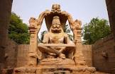
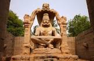

INFORMATION ABOUT HAMPI
Hampi or Hampe, also referred to as the Group of Monuments at Hampi, is a UNESCO World Heritage Site located in Hampi town, Vijayanagara district, east-central Karnataka, India.
SPECIALITY OF HAMPI
There are a lot of beautiful temples, majestic ruins, aquatic structures and royal embellishments of the times of yore that illustrate the glorious past. The ruins of the olden times are an incredible sight to behold, for both the pilgrims and the tourists alike.
HISTORY
 

A place of such great magnificence and opulence is sure to have a rich cultural heritage to it too. Hampi was a part of the Mauryan Empire back in the third century BC. There has been enough evidence of the fact that the rock edifices found in the Bellary district were a common form of recording relevant information in the times of Ashoka. Hampi was the capital city during the four different dynasties altogether in the Vijayanagar city that came into existence in the year 1336 AD. The Vijayanagara Empire reached unfathomable heights under the guidance of King Krishnadeva Raya of the Tuluva Dynasty.
PLACES TO VISIT IN HAMPI
1)VIRUPAKSHA TEMPLE


The temple is so constructed that its main entrance faces east and homes to two courtyards. No sooner you enter the temple, there is a statue of Nandi with three heads. There is a pillared hall in the center which is reckoned as the Ranga Mandapa.
2)Lotus Mahal.


A tour to Hampi is incomplete without visiting Lotus Mahal. It is one of the fine architectural designed palaces that are uniquely identified by its lotus look like structure. This glorious building is within the Zenana Enclosure, a segregated area that is used by the royal women of Vijayanagara Dynasty.
The Lotus Mahal is otherwise called the Kamal Mahal or Chitragani Mahal. It’s remarkable and unmistakable design is the main highlight of the palace. It is one of only a handful few astonishing building in Hampi that had not been damaged or destroyed amid the attack on the city.
3)MATANGA HILL.


Matanga Hill, which commands a spectacular attention, is the most talked hill in Hampi, Bellary district of Karnataka state. The peak of the hill gives a splendid panoramic view of the erstwhile capital city of the mighty Vijayanagara Empire including the Virupaksha temple, Tungabhadra River and ruins of Achyutaraya Temple among others. The hill has many myths and legends associated with it, adding to its allure.
| FOOD |
HALT |
GUIDE |
TOURIST BUS |
| Available |
Available |
Available |
Available |